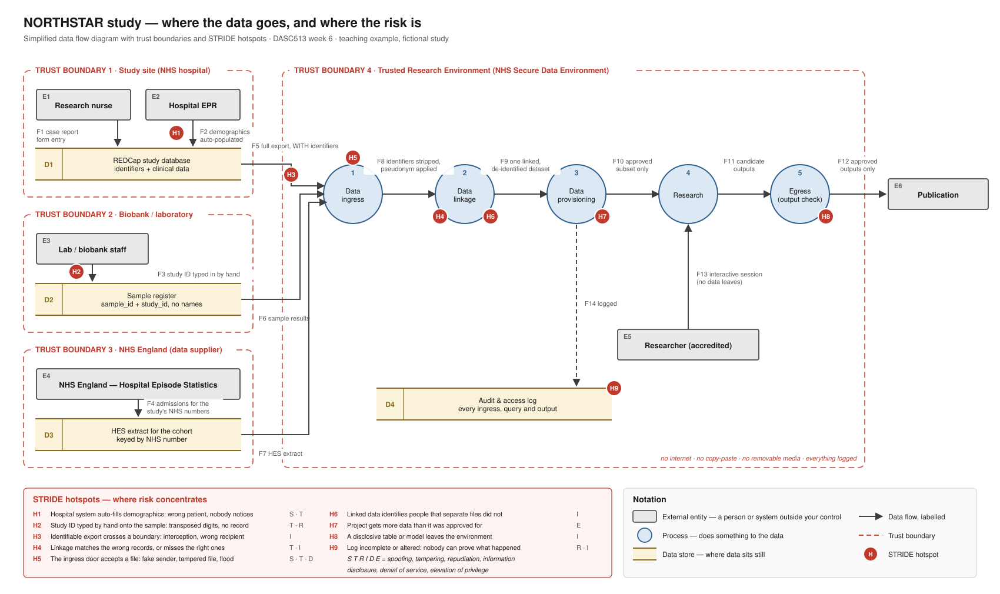

Can the data be shared?
Today you follow the data from the hospital to the research environment and find where it could go wrong. Then you try to make NORTHSTAR safe to share, and find out what that costs.
The scenario, extended
The colleague still wants a model predicting death in hospital. The study now also wants to know about deaths and readmissions after discharge, which the case report form does not record. Those come from national data (Hospital Episode Statistics and death registrations), linked by NHS England acting as a third party.
And the colleague has asked for a copy of the dataset on their laptop.
Plan for the session (2 hours, timings indicative)
| 0:00 | Brief: the linkage extension, the diagram symbols and STRIDE |
| 0:10 | Task 1, in groups: add the linkage to the data flow diagram |
| 0:30 | Task 2, same groups: what could go wrong, and where |
| 0:50 | Break |
| 1:00 | Parts 1 and 2, in pairs: what identifies a patient, and the treatment |
| 1:25 | Parts 3 and 4: is it anonymous now? and the free text |
| 1:45 | Part 5, debrief: your verdict |
| 1:55 | Download your work |
Timings are a guide, not a clock: spend longer where the discussion is useful. Boxes marked Going further are optional. Open them if you finish early; nothing in them is needed later. You do not need to write any code: read each code box, say in English what it does, then press Run.
Task 1 · Where does the data go?
In groups · about 20 minutes
A data flow diagram answers one question: where does the data go?
It uses four symbols and one extra idea.
| Symbol | Called | Means |
|---|---|---|
| Rectangle | External entity | A person or organisation outside your control. You can only decide what you accept from it. |
| Circle | Process | Something that does something to the data: checks it, joins it, changes it. |
| Two parallel lines | Data store | Where data sits still: a database, a file share, a spreadsheet on a laptop. |
| Arrow | Data flow | Data moving, labelled with what moves. |
| Dashed line | Trust boundary | Where control changes hands from one organisation or system to another. Risk concentrates here. |
Below is the diagram from the lecture. It already shows NHS England sending Hospital Episode Statistics in. What it does not show is how NHS England knows which patients to send data about. That is the gap your group fills.

Add the linkage to the diagram
On your group's Miro board (or on paper, or in this table), add what has to happen for NHS England to send back data about these patients. For each thing you add, name the human step: the point where a person does something by hand, such as typing, emailing, or approving.
Hint, if your group is stuck
NHS England cannot send back data about NORTHSTAR participants unless it knows who they are. Ask: what has to travel to NHS England first (think NHS numbers), who sends it, how, and what comes back?
| What you added (a process, store, entity or flow) | What actually moves | Which trust boundary it crosses | The human step |
|---|
Task 2 · What could go wrong, and where?
Same groups · about 20 minutes
STRIDE is a checklist of six ways things go wrong
Stand at each trust boundary on your diagram and ask the six questions. You do not need all six at every boundary; you need the ones that could really happen.
| Letter | Threat | The question to ask | In a research pipeline, for example |
|---|---|---|---|
| S | Spoofing | Could someone pretend to be someone they are not? | An extract request from a look-alike email address |
| T | Tampering | Could the data be changed, by accident or on purpose? | A study ID typed in by hand with two digits swapped |
| R | Repudiation | Could someone deny doing something, with no record to prove it? | Nobody can show which version of the linkage produced the results |
| I | Information disclosure | Could the data reach someone who should not see it? | A spreadsheet of NHS numbers emailed to the wrong person |
| D | Denial of service | Could the work be stopped? | A corrupt file that stalls the ingest for a week |
| E | Elevation of privilege | Could someone get more access than they were given? | A project gets more fields than the committee approved |
Most real incidents are mundane: an email, a laptop, a shared password. Do not put every threat under I. Residual risk means the risk that is left once the existing control is in place.
Three threats, written down
One row per threat. Concentrate on the boundaries your linkage step crosses. At least one row must describe a threat with no technology in it at all.
Example row, completed
| Element | Sample register, typed by hand |
|---|---|
| Threat | Study ID entered with transposed digits |
| STRIDE | T (and R: nobody records who typed it) |
| Looks like | A sample result is attached to the wrong patient, and the analysis silently uses it |
| Existing control | None |
| Residual | High |
| Mitigation | Print barcode labels from REDCap; scan, never type |
| Element or flow | Threat (what could happen) | STRIDE letter(s) | Existing control | Residual | What you would do about it |
|---|
Part 1 · What in here could identify a patient?
After the break · in pairs · about 7 minutes
Three kinds of identifying field
- Direct identifier: identifies a person on its own. A name, an NHS number.
- Indirect identifier: does not identify anyone alone, but combined with others narrows down to one person. Date of birth, postcode, sex, admission date, a rare diagnosis.
- Free text: anything could be typed in it, including names and phone numbers. Treat it as its own problem.
Everything else is a clinical value that carries no meaningful identifying information on its own (a temperature, a blood result). The middle group is where re-identification actually happens, and it is the one people underestimate.
Sort fourteen columns
Choose a group for each column. Three are done for you. Argue about the borderline ones with the person next to you: the argument is the point.
Part 2 · Applying the treatment
In pairs · about 18 minutes
Now build a de-identified copy. You never overwrite the source: if you get it wrong you want to be able to go back. Each kind of field gets a different treatment, and every treatment costs something.
Two rough edges in this dataset get in the way today, and you will take them apart properly in week 7. The three hospitals write dates three different ways
(16/12/2024, 2024-12-16, 16-Dec-24), so the first code box reads each site's dates using that site's format.
And records 47 and 88 are the same person entered twice; today that is useful.
Load the data, then read the admission dates site by site.
Start from a copy and remove the direct identifiers outright.
A pseudonym: a consistent, meaningless replacement
Dropping the NHS number means you can no longer tell which rows belong to the same person, and you cannot link to NHS England's data later. The standard answer is a pseudonym: a made-up ID that is always the same for the same person, but means nothing on its own.
It is made with a hash: a function that turns any text into a fixed-length scramble, always the same scramble for the same text, and impossible to run backwards. But there is a catch. An NHS number is ten digits, so there are only ten billion possibilities, and a laptop can hash about ten million values a second. So someone with the hashed IDs could hash every possible NHS number in about twenty minutes, and look each one up. The fix is a salt: a long secret phrase stuck on the front before hashing. Without the salt, the lookup table cannot be built. So the salt must be kept secret, and kept somewhere the data is not.
Records 47 and 88 are the same person. Did they get the same pseudonym?
The pseudonym
Date of birth is usually replaced by an age band. First we need the age at admission.
The minimum age is negative. Here is why.
Wirral Park writes years with two digits: 18-Jul-66. A computer has to decide which century that is, and R and Python both use the same fixed rule:
00 to 68 become 20xx, 69 to 99 become 19xx. So a patient born in 1966 is read as born in 2066, and their age comes out below zero.
For dates of birth in a study of adults, the rule is wrong for everyone born before 1969. This is a real and very common bug.
The fix below says: a date of birth in the future must be a century too late, so take 100 years off it.
Did the fix fix everything?
Record 63 is at Wirral Park, admitted in October 2024. Its date of birth was typed as 11-Apr-26. The fix turned that into 1926, making the patient 98.
Keep this for week 7: a fix that makes every value look plausible can hide the errors you most need to see.
Now the age bands. The date of birth itself is not kept.
Look at the age band counts
Postcodes become districts: the first half, L8 rather than L8 4QZ.
The postcodes in this file are messy (some lowercase, some with no space, some with two), so the code removes spaces first and keeps everything except the last three characters.
Dates become days since admission, so the clinical timeline survives but the calendar does not.
What did that cost?
Every treatment above removed something. Names and NHS numbers are gone, ages are bands, postcodes are districts, and calendar dates are gone.
Going further: a deliberate trap in the postcode code
The obvious way to get a postcode district is "take everything before the space". Try it on four real-looking values and compare it with the function above.
Part 3 · Is it actually anonymous now?
In pairs · about 12 minutes
k-anonymity: could anyone be picked out?
Names gone, ages banded, postcodes cut back, dates converted. It feels safe. Feeling safe is not a method.
Here is a simple test. Choose the facts about a person that someone could know from elsewhere (their sex, roughly how old they are, where they live). Now count how many people in the data share each combination of those facts. If a combination belongs to only one person, that person can be picked out by anyone who knows those few facts. A dataset is called k-anonymous when every combination that appears belongs to at least k people. UK health data often uses k = 5 as a rule of thumb (it is a convention, not a law).
| A toy example with six people, checking sex and age band | |||
|---|---|---|---|
| sex | age band | how many share it | |
| F | 65-74 | 3 | fine for k = 3 |
| M | 65-74 | 2 | fails k = 3 |
| M | 85+ | 1 | unique: this person can be picked out |
The code below does that count for NORTHSTAR. You do not need to follow every line: it reports the smallest group, how many people are alone in their group, and how many people are in groups smaller than k.
First check: two facts, sex and age band.
Second check: add one more fact, the home district.
One extra field, and the picture collapses. Risk from indirect identifiers does not add up, it multiplies: each field cuts the 100 patients into finer slices, and you run out of people very quickly.
Two things worth knowing before you use the explorer. First, some of the "unique" people are unique only because of how sex was typed
(F, M, Male, female, 1, 2, Unknown): tidying the codes first changes the answer.
Second, adding the hospital site changes nothing, because each site draws patients from its own local districts, so the district already tells you the site. A field can be identifying and redundant at the same time.
Try things, and see what each one costs
Use the explorer. Try at least these three: (1) tick tidy the sex codes first; (2) change home area from district to area; (3) change age to 20-year bands. Watch the three numbers. The code for each try is shown underneath so you can see what you would have typed; you do not have to read it.
Anyone can make a dataset anonymous by deleting it. The skill is knowing what you gave up.
Part 4 · The field everyone forgets
In pairs · about 8 minutes
Nothing has been done to the free-text columns yet. Look at them.
Free text is where the identifiers hide
Count what you can see in those comments: a next of kin by name, telephone numbers, a street address, named clinicians, a named GP practice, occupations, a language spoken. None of it is in a structured field, so none of the treatment in Part 2 touched it.
A computer can be told to look for patterns: anything shaped like a UK phone number, for example (the code below does that with a regular expression). But "retired midwife at this hospital" has no pattern, and in a dataset of 100 patients across 3 sites it points at one person more surely than a phone number does. One comment is not about identity at all: it says consent withdrawn. Notice that the only place that fact appears is in a free-text box.
Replace anything shaped like a phone number, then show only the comments that still mention a person.
Read the redacted output
Going further: the password that would not go away
Research code ends up in git repositories. Sooner or later somebody puts a database password in a script, notices, and deletes it. Below is a tiny repository with two commits: one adds a script containing a password, the next removes it. These are terminal commands; the output is shown so you do not need git installed.
What does the repository look like now?
git log -p shows every change ever made, including what was removed.
Part 5 · Your verdict
Debrief · about 10 minutes
You are not being asked to say no to the colleague. You are being asked to say what has to be true first. A good answer covers: what in the data could identify a patient; what you did about it; what that cost the analysis; what you would refuse to release in any form; and what setting you would insist on instead of a laptop.
The Five Safes is the framework UK data services use to ask the same question in five parts: safe projects, people, settings, data and outputs. No single safe has to carry all the weight. A Trusted Research Environment is a strong setting, which is why it can hold data that would never be safe to put on a laptop.
What do you tell them?
A clinical colleague asks for a copy of this dataset on their laptop so they can start modelling. Four to six sentences.
Five Safes mapping
One sentence per safe, for this project with the linkage added.
| Projects | Is this use of the data appropriate? |
| People | Can the users be trusted to use it appropriately? |
| Settings | Does the access environment prevent unauthorised use? |
| Data | Is there a disclosure risk in the data itself? |
| Outputs | Are the statistical results non-disclosive? |
Download your work
Your answers are saved in this browser as you type. Before you leave, download a copy for your notes. Your diagram additions, risk table and Five Safes mapping are the parts you will most want to look back at.